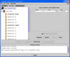

Class View:
|
The Class View shows all the classes in which the user is enrolled. By double clicking on a class icon, the class information will expand and reveal all the teams and groups the user is participating in. One can further double click on any team or group icon, which will then show all the team or group associated users. To join a team or group, select a team or group icon and then click on the corresponding “Join Team” or “Join Group” button. If you click on the Join Group button, the creator of the group will be notified and prompted to allow the requester join the group. This action switches from the current Class View to the Active Session view. To create a group, select a class under which you want to create the group and then click on the “Create Group” button. You will be prompted to enter a group name. After accepting the provided group name, the view changes from the Class View to the Active Session view. At this point you are the creator of the group and have control over who will be able to join that group. When the group creator leaves the group and there are still group participants active in that group, the creator will be prompted to pass on his/her group ownership to one of the remaining group members. You can view any prepared Course Content by selecting a class and then click on the “View Course Content” button. This will open a “Course content for class: <Selected Class Name>” pane on the right side of the Class View and will list all the currently available class content . You can select any of the content and download it to your system by clicking on the Download button. |